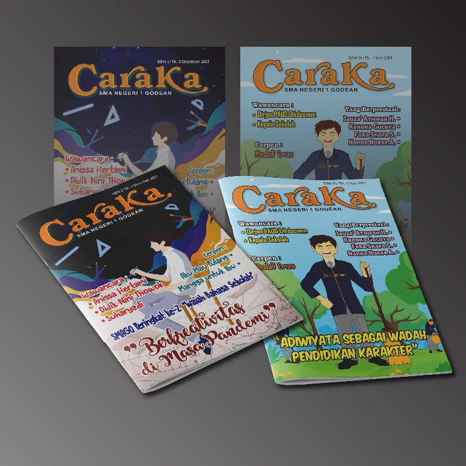
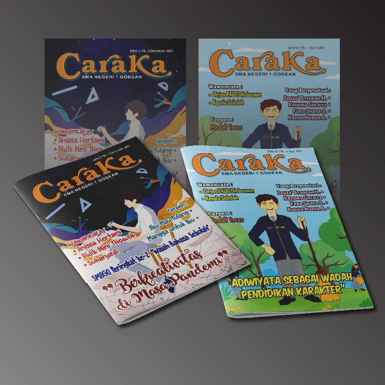
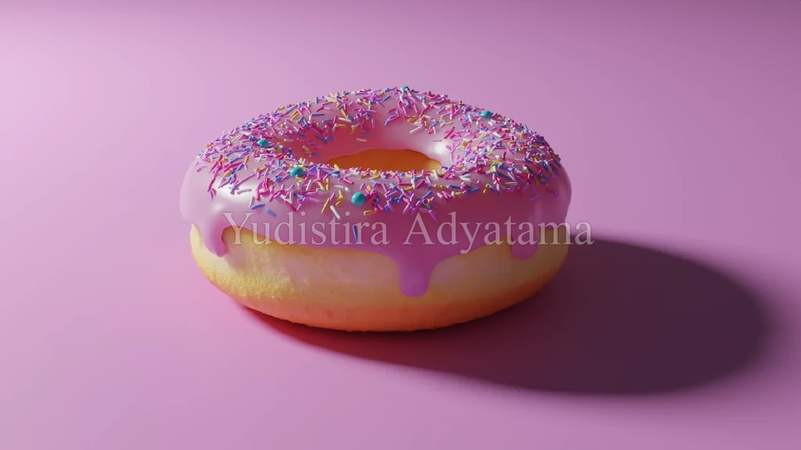
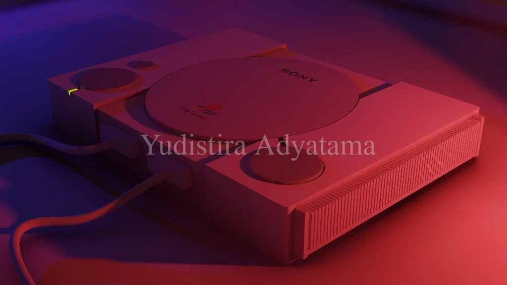
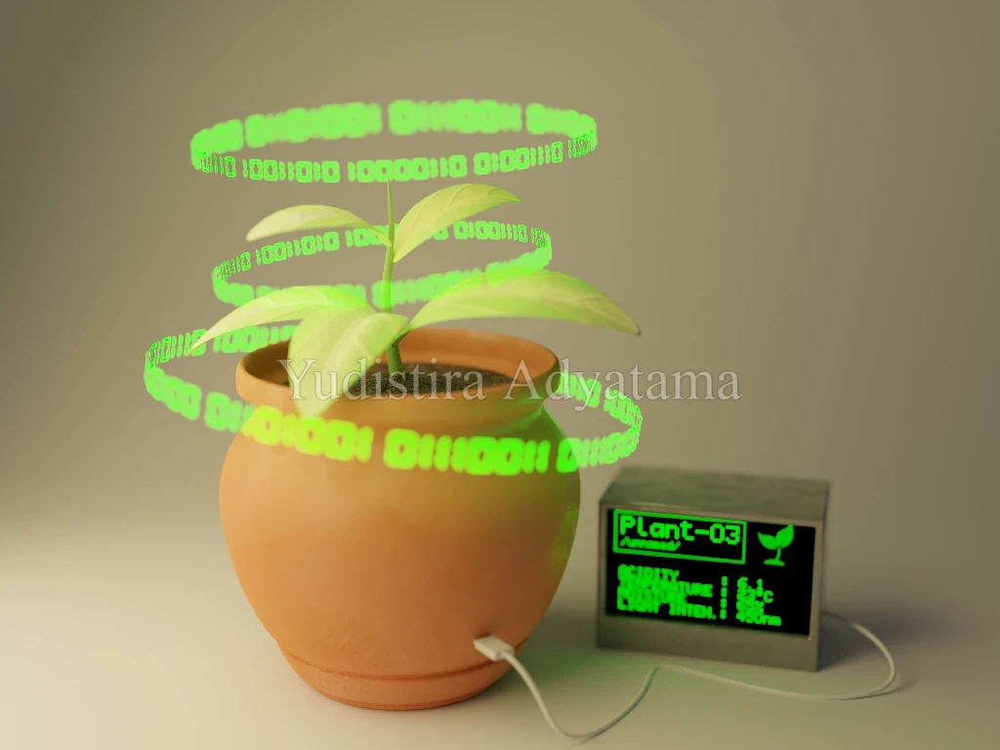

Skills


Projects
A collection of works to which I have dedicated my efforts from the very beginning—whether I initiated the idea or lent a helping hand.


 

Gallery
A visual display of my work—proof that creativity can be both fun and organized.







Videos
Where my ideas move, speak, and (sometimes) look cooler than intended.